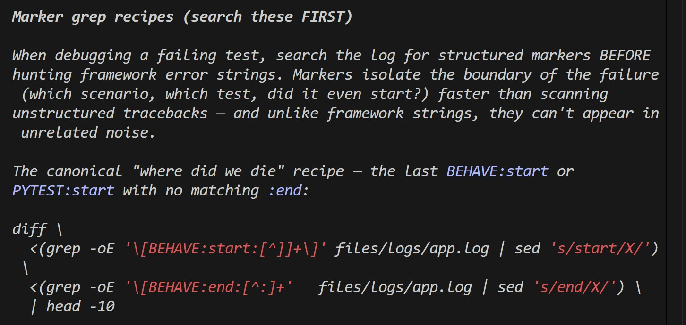
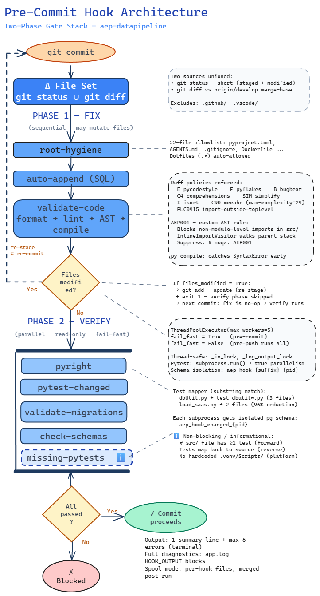

Where engineering leverage moved when AI started writing the code — and what a small team built into the 25% of commits that did not ship a feature.
Across six months, a seven-engineer team grew a regulated-FS Python codebase from 1,304 lines to 350,000. Output velocity held at roughly 200 commits per month throughout. The non-obvious detail is the split: one commit in four did not ship a feature. They built the harness around the AI coding agent — instructions, skills, tools, hooks, and prompts that gave the agent deep codebase understanding and automated quality gates.
That ratio — one commit in four spent on the harness rather than the product — is the product.
The article below explains the two high-leverage zones where engineering teams must focus — the first mile (the harness) and the last mile (the guard rails) — together with the pitfalls, trade-offs, and the forced choice that arrives at the end. The failures are what made the harness work.
We have moved from humans-write-and-model-suggests to agent-led implementation loops, where the model drives multi-file changes across entire sessions. That shift relocates where engineering leverage actually lives. Historically the biggest productivity gains came from model upgrades — better model, better output. That mental model is now incomplete and arguably backwards.
| Was | Now |
|---|---|
| Humans write, model suggests | Agents drive multi-file changes across whole sessions |
| Leverage from model upgrades | Leverage from the harness around the model |
| Better model → better output | Better harness → better output, for the same model |
Two recent papers reinforce the point independently of our own measurements.
Outer-loop optimisation of harness code beats a state-of-the-art context-management system by 7.7 points, using a quarter of the context tokens. Stanford / MIT / KRAFTON. arXiv:2603.28052
A synthesised code harness lets a smaller Gemini-Flash outperform Gemini-Pro and GPT-5.2-High on 145 games. Google DeepMind. arXiv:2603.03329
A well-harnessed small model beats a poorly-harnessed large model. The harness is the control surface that determines whether the agent's throughput becomes production code or expensive rework.
Three zones of investment. The forced choice arrives at the end of the article: when the agent starts copying anti-patterns from your own code — and it will — you either accept the slow, high-effort grind of full-sweep refactors (with some changes regressing on the next pass), or you codify the smell into AST and Vulture gates so the rule stops depending on instructions that decay with context. We will come back to it.
The first investment in the first mile is behaviour-first specifications. Define behaviour before implementation, in plain English. BDD-style Gherkin scenarios are harder for agents to reward-hack than unit tests because they encode domain intent in language the agent cannot silently rewrite.
Scenario: Application legal entity extraction includes LEI code
Given an application legal entity with status "ACTIVE"
When the extraction runs
Then the output contains the entity's LEI codeLEI is the Legal Entity Identifier — the ISO 17442 reference for a legally distinct party, a regulated-FS staple.
The agent cannot quietly delete that requirement without it being obvious in review. Contrast with a pytest assertion: assert result > 0 is trivially weakened to assert result >= 0 and the test still passes. BDD scenarios make the intent explicit and the evasion visible.
Agent quality depends on discoverable, deterministic conventions — where to read policy, how to run tools, what to avoid, and how to recover from known failure modes. Our AGENTS.md is always loaded: 9,279 tokens on every request. Expensive in isolation, but consider what it buys: terminal protocol rules that prevent death spirals, tool command references that eliminate guessing, and a skill registration table that acts as a menu. Skills themselves are progressive disclosure done right — exactly the paradigm that the Model Context Protocol (MCP) got wrong. Fourteen skills cost roughly 700 tokens to advertise; the relevant SKILL.md fires only when triggered, typically 6,000–12,000 tokens of conventions, templates, and worked examples.
| Asset type | Files | Total lines | Avg / file |
|---|---|---|---|
Skills (SKILL.md + bundled assets) | 14 | 9,241 | 660 |
Glob-activated *.instructions.md | 15 | 5,361 | 357 |
| Prompt templates | 10 | 3,021 | 302 |
| Agents | 4 | 1,356 | 339 |
| Markdown collateral subtotal | 43 | 18,979 | 441 |
Beyond the markdown sits the executable layer. The tools/ directory holds 10,600 lines of Python over 141 commits — the CLI wrappers the agent calls (the pytest, behave, log-search, and validation wrappers) and the orchestration logic for the two-stage pre-commit and pre-push hooks that anchor the last mile. Very nearly half of every harness commit shipped in six months landed in this single directory; the discipline of building reliable tooling between the agent and the terminal earned that share.
Compaction is inevitable. The model's circular context log discards what it deems less relevant to make room for new context. You cannot avoid this — you can mitigate the blast radius. The technique comes from Anthropic's long-running agent harness pattern: a two-phase plan where an initialiser agent sets up scaffolding (progress log, task status table, environment state) and the coding agent makes incremental, test-validated progress with interim commits. The plan file lives on disk. Compaction destroys conversation context; the on-disk plan survives.
A two-phase plan that actually works includes quality gates at each step, verification loops with confidence levels, state-of-the-world task tracking, debug procedure pointers for when things fail, and environment initialisation procedures to restore context after restarts. Without these the plan is a to-do list. With them it is an engineering control loop.
For our model mix — Opus 4.6 for planning, GPT-5.3 x-high and Opus 4.6 for coding — the model forgets sections of the prior conversation reliably between twenty and forty minutes in. The on-disk plan persists as an island of memory through every compaction event.
The two-phase plan is the clearest example of a principle that is easy to forget under pressure: do not use a skill when a command will do. Skills trigger on natural language. The word plan in particular is overloaded — it appears in user prompts, in agent reasoning chains, in commit messages, and in code comments. A team-wide plan skill will fire on most of those, regardless of intent, and every spurious activation costs roughly 6,000–12,000 tokens of SKILL.md content loaded into the agent's context.
That cost is not yours alone. In a shared development environment every developer's context window is finite, and a colleague's session will get the same overload from your skill that yours did. Specificity is etiquette as well as economy. Where you know exactly when a procedure is needed — as you do for plans — give the operator a slash command and skip the semantic discovery layer. Save skills for the cases where the agent really should pick the right one without being asked.
Running poetry run pytest directly dumps roughly 20,000 tokens of raw output into the context window. Our tools framework returns approximately 800 tokens — a structured one-line summary with a log-file breadcrumb for deeper diagnosis. That is a 96% saving, but the real win is that the agent spends tokens thinking instead of reading.
| Operation | Inline | CLI framework | Savings |
|---|---|---|---|
| Read log file (5,000 lines) | ~60,000 | ~1,000 | 98% |
| Run pytest (full output) | ~20,000 | ~800 | 96% |
| Run behave (full output) | ~40,000 | ~1,200 | 97% |
| Code validation | ~10,000 | ~600 | 94% |

The detail still lives in app.log, where trained use of the in-built grep_search tool can explore if needed. The agent diagnoses failures by grepping the log rather than scrolling stdout. The feedback loop survives terminal flakiness because it was never dependent on terminal reliability.
Models degrade in a slow linear fashion long before auto-compaction drives performance off a cliff (see Chroma's research at trychroma.com/research/context-rot). Manual compaction at 50–70% utilisation gives smarter, less lossy compaction than auto-compaction at the ceiling. You control what gets preserved. Waiting for the limit means the system chooses for you, and badly. A good plan has natural units of work and points of handoff where doing this is least disruptive.
PowerShell shell integration in VS Code has a documented fix-regress cycle going back to 2022 — each monthly release fixes two to four terminal issues and introduces one to three new ones. The chat-terminal label carries 99 open issues and 531 closed (630+ total). Active examples include the agent not waiting for command completion, cmd.exe arguments leaking into PowerShell, and Python venv activation destroying shell integration. Git Bash sidesteps the failure class entirely.
{
"terminal.integrated.defaultProfile.windows": "GitBash",
"chat.tools.terminal.terminalProfile.windows": "GitBash",
"terminal.integrated.automationProfile.windows": {
"path": "bash.exe",
"args": ["-l"]
}
}Pin Git Bash as the default and the automation profile, and the terminal becomes a launcher, not the feedback channel; logs and grep_search carry the signal.
The last mile is iterative. It is a quality gate that rejects bad code and sends the agent back to fix it automatically, until the bar is met. Rejection is a feature, not a failure.
| Gate | What it catches | Why it matters |
|---|---|---|
| BDD (Behave) | Business logic violations | Hardest to silently weaken — scenarios encode intent in plain English |
| Pytest | Regressions, unit failures | Fast feedback, but the model will reward-hack these |
| Ruff | Formatting, import order, lint | Auto-fixes most issues; sub-second turnaround |
| Vulture / AST (Abstract Semantic Tree) | Dead code, anti-patterns, string interpolation | Catches patterns the model copies from bad exemplars |
| Agentic review | Weakened assertions, disabled tests, excessive mocking | Catches a meaningful share of reward-hacking patterns |
| Human PR review | Everything else | Non-negotiable. Always will be. |
Given a failing pytest, the agent has four common paths to a passing run: weaken the assertion (assert result > 0 becomes assert result >= 0), mock away the real dependency, restructure the test to avoid the failure path, or delete the test. All four have happened in our codebase. The agent is not behaving maliciously — it is doing exactly what its training optimises for, which is to drive the feedback signal (green tests) toward success, not the underlying intent (correct code). The literature calls this reward hacking; in practice it looks like a test suite that turns green for the wrong reasons. No single gate is a silver bullet — the stack works because each layer catches a different class of pattern.
Every git commit triggers a two-phase pre-commit hook. Phase 1 (FIX) runs sequential auto-fixes — root-hygiene, changelog auto-append, and Ruff format-and-check with --fix. If files were modified, the commit exits and asks the developer or agent to re-stage. Phase 2 (VERIFY) runs parallel read-only checks — Pyright (scoped to staged files, 12.6 seconds), pytest-changed (tests mapped to modified files only, 2.2 seconds), and migration validation. Total wall-clock time dropped from over 200 seconds to roughly 55.

The key design decision: hooks write structured one-line summaries to stdout and full diagnostics to app.log. The agent diagnoses failures via grep_search on the log file — a zero-terminal-cost operation. When the IDE's terminal integration breaks, and it breaks often, the feedback loop survives because it was never dependent on terminal reliability. The pre-push hook is manually triggered; we no longer let the agent push.
This is the subtlest failure mode in agentic development, and the one most engineering teams discover only after they have already shipped bad exemplars at scale. Skills, instructions, and the AGENTS.md registry shape the agent's first outputs at session start. Thirty minutes in, the surrounding code in the editor — the files the agent has just read or just edited — becomes the exemplar of what good looks like for this codebase. The agent mimics what it sees, not what it was told.
A worked example. Early in our codebase a deprecated logging pattern survived a refactor in three files: logger.warning("payload=%s" % payload) instead of logger.warning("payload=%s", payload). The instructions, both global and glob-activated, told the agent never to use percent-interpolation in log calls. They worked at minute one. By minute thirty-five, once the agent had touched any of the three deprecated files, every new log call it wrote used the same anti-pattern. The instruction had not been forgotten; it had been outweighed.
The model is making a Bayesian update: in this codebase, percent-interpolation is observed at non-zero frequency, therefore percent-interpolation is permissible. Every line in your repository is training data for the next session.
You either accept the slow, high-effort grind of full-sweep refactors — knowing that some changes will regress on the next pass and that the discipline lives in your team's calendar, not your tooling — or you push the rule down into AST and Vulture gates so the smell is mechanically rejected at the gate stack. Instructions decay with context; gates do not. Lint rules and pre-commit gates catch new instances; only gates plus refactor remediate existing ones.
The choice is the takeaway. It is not enough to write the right rules — you have to keep the codebase clean enough for the rules to win on local evidence, or push the rule down into the gate stack so local evidence stops mattering.
The discipline this asks of an engineering organisation is significant. That is the part of agentic development that resembles classical engineering management more than it resembles model tuning.